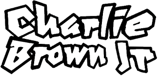
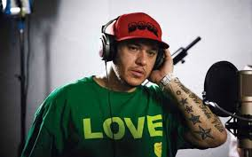
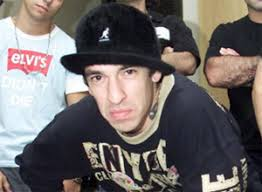
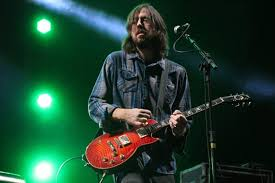
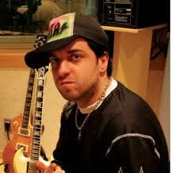
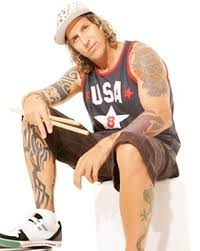
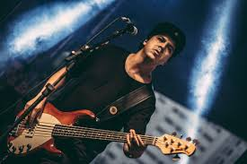
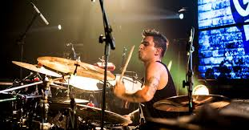
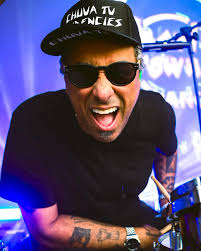

Membros da Formação Clássica


Chorão (Alexandre Magno Abrão)
Vocalista e principal letrista da banda desde a formação, em 1992, até seu falecimento em 2013.

Champignon (Luiz Carlos Leão Duarte Júnior)
Baixista e backing vocal. Reconhecido pelo seu beat box de estilo único.

Marcão Britto
Guitarrista e letrista.

Thiago Castanho
Guitarrista e letrista. Fez parte da formação original, de 1992 a 2001. Retornou em 2005 e permaneceu até 2013.

Renato Pelado (Renato da Silva Cunha)
Baterista. Um dos fundadores, tocou de 1992 a 2005.

Heitor Gomes
Baixista. Entrou em 2005 após a saída de Champignon e permaneceu até 2011.

Bruno Graveto
Baterista. Assumiu a bateria em 2008 e permaneceu até o fim da banda em 2013.

Pinguim (André Pinguim Ruas)
Baterista. Entrou em 2005 e ficou até 2008.